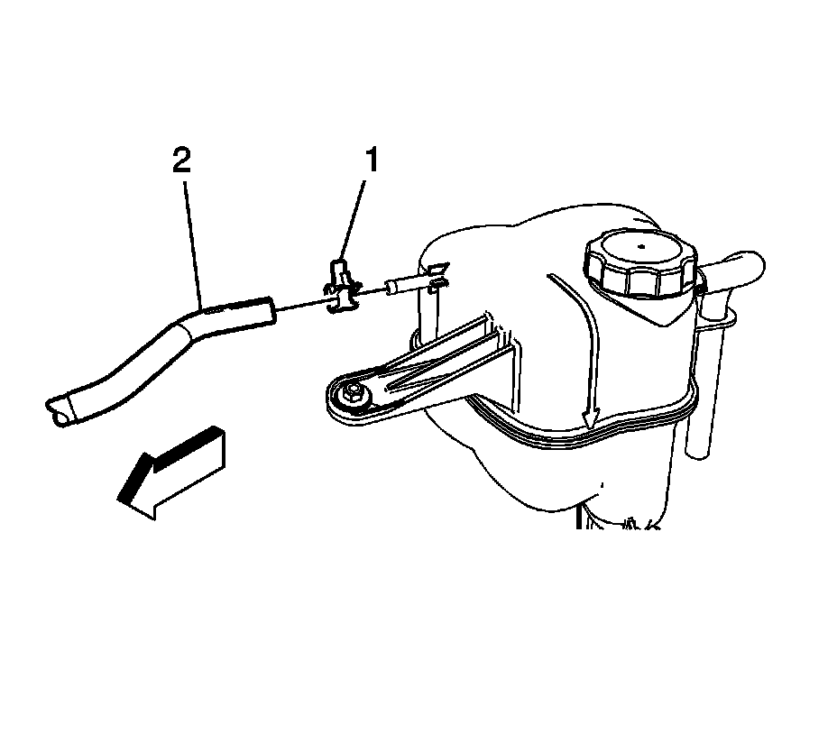
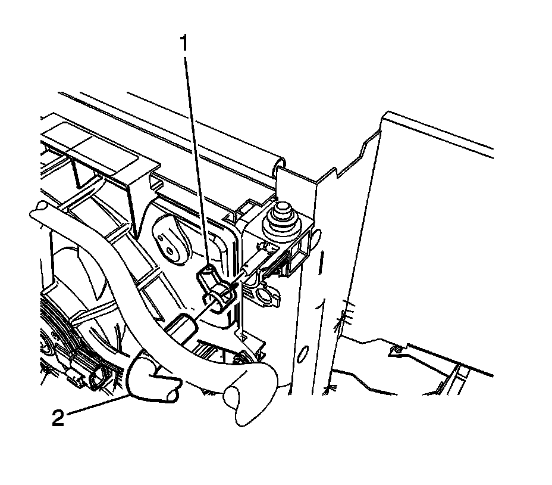
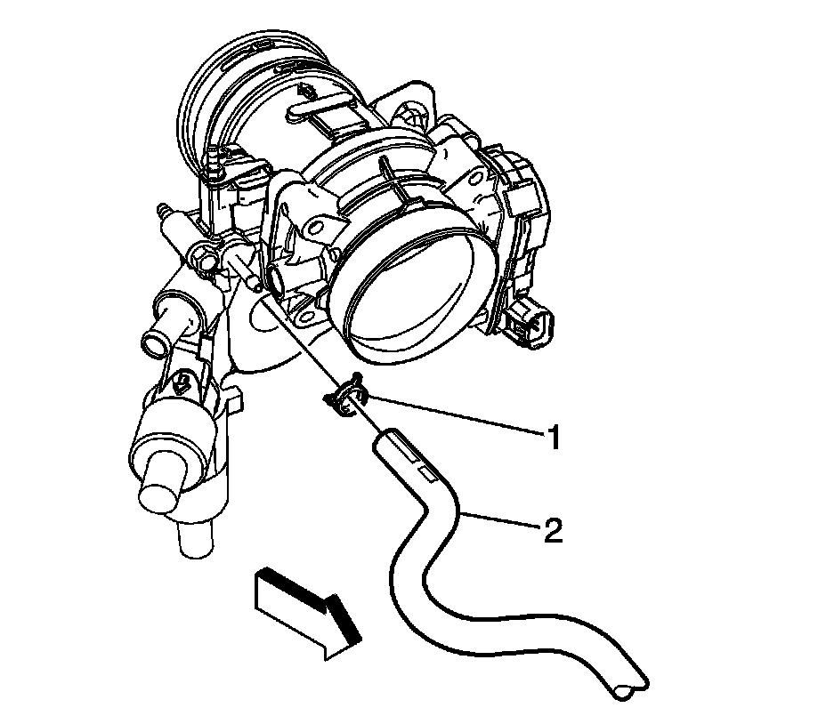

Right Hand Drive
Radiator Surge Tank Inlet Hose/Pipe Replacement (Right Hand Drive)
Removal Procedure
1. Partially drain the cooling system. Refer to Cooling System Draining and Filling (GE 47716 -Vac N Fill Coolant Refill Tool) (Service and Repair)Cooling System Draining and Filling (Static Fill) (Service and Repair) .

2. Compress the surge tank inlet hose clamp (1) and remove the surge tank inlet hose (2) from the surge tank.

3. Compress the surge tank inlet hose clamp (1) and remove the surge tank inlet hose (2) from the radiator.

4. Compress the surge tank hose clamp (1) and remove the surge tank inlet hose (2) from the water housing assembly.
5. Remove the surge tank inlet hose from the retaining features on the fan shroud.
6. Remove the surge tank inlet hose from the vehicle.
Installation Procedure
1. Connect the surge tank inlet hose (2) and clamp (1) to the water housing assembly.
2. Connect the surge tank inlet hose (2) and clamp (1) to the radiator.
3. Insert the surge tank inlet hose into the retaining features on the fan shroud.
4. Connect the surge tank inlet hose (2) and clamp (1) to the surge tank.
5. Fill the cooling system. Refer to Cooling System Draining and Filling (GE 47716 -Vac N Fill Coolant Refill Tool) (Service and Repair)Cooling System Draining and Filling (Static Fill) (Service and Repair) .